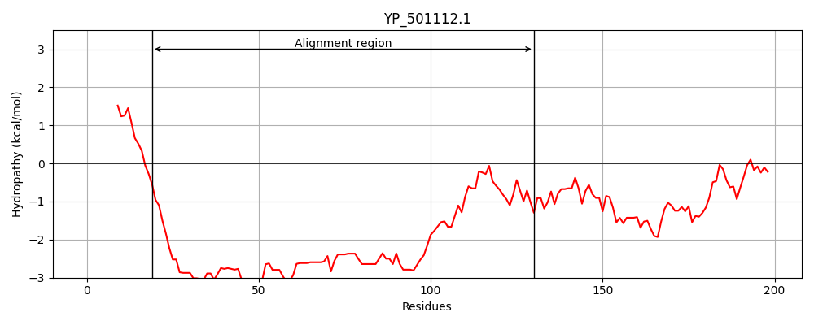
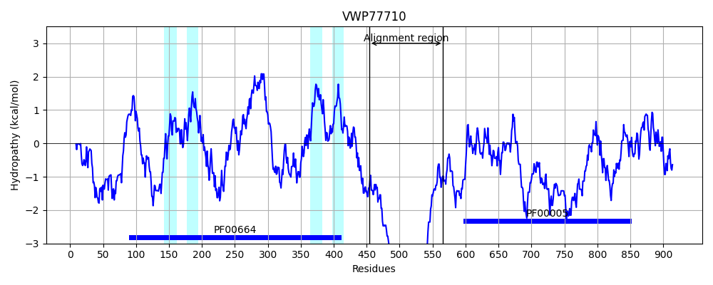
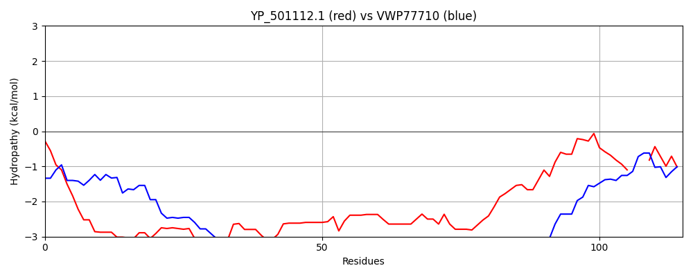

Hit Accession: VWP77710
Hit TCID: 3.A.1.201.48
Hit Description: gnl|BL_ORD_ID|20579 gnl|TC-DB|VWP77710.1|3.A.1.201.48 ABC transporter B family member 5, putative [Plasmodium falciparum 3D7]
Mach Len: 115
e:0.000000
Query TMS Count : 0
Hit TMS Count: 4
TMS-Overlap Score: 0.000000
Predicted Substrates:CHEBI:25367;molecule
BLAST Alignment:
| Protein Hydropathy Plots: | |
|---|---|
|  |  |
Pairwise Alignment-Hydropathy Plot: | |
|  | |